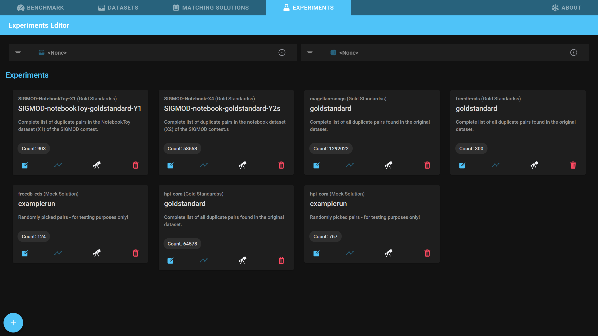
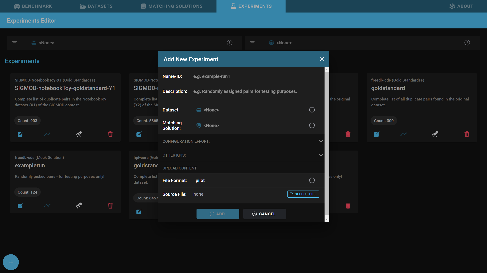
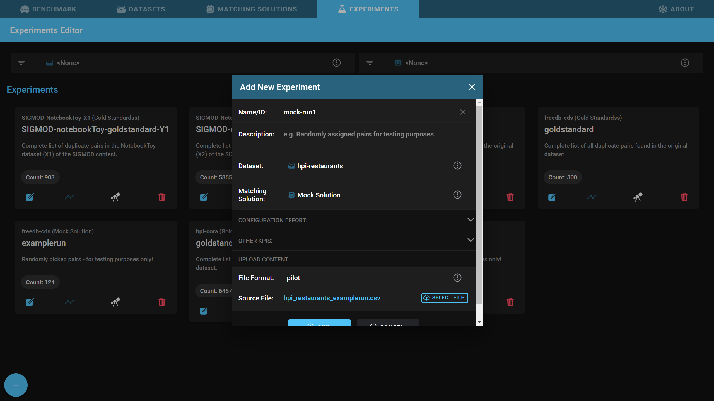
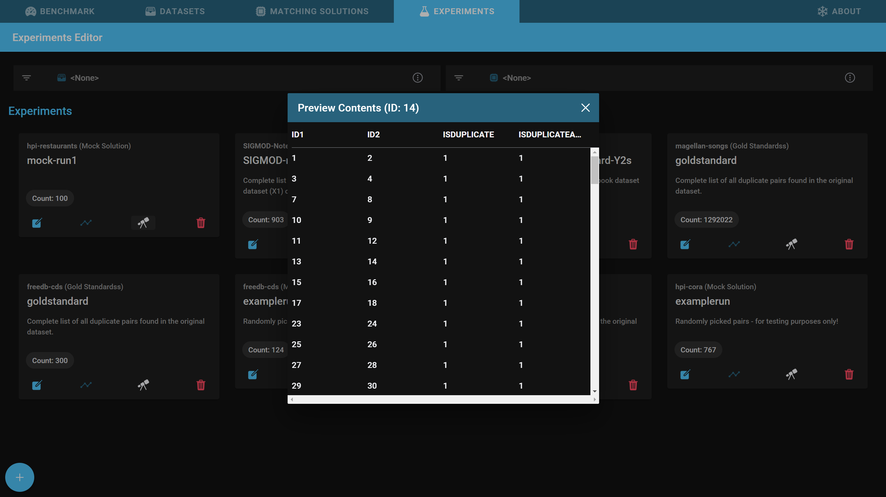

Experiments
At the end of this page you will know how to add experiments to Snowman. Additionally you will know what you can do with experiments once they are in the tool.
Adding an experiment
- Open the Experiments tab.
- 
- Click on the + button in the lower left corner of the screen.
- 
- Specify a short name and optionally a comprehensive description.
- Choose the dataset which this experiment deduplicates and the matching solution which created this experiment.
- Optionally, open the Configuration Effort and Other KPIs sections and fill in details.
- Matching Solution Knowledge Level measures how much you know about the matching solution.
- Matching Solution HR Amount measures how much time you spent configuring the matching solution to produce this experiment.
- Select a file containing the output of the matching solution and choose the correct import format.
- 
- Click on Add.
- this process can take several minutes depending on the size of the experiment.
Previewing an experiment
You can preview the experiment by clicking on the telescope button on the bottom of the dataset card to make sure that the experiment was added successfully.

Editing an experiment
After the initial experiment creation, you can still change some attributes of the dataset. To open the experiment editor, click the leftmost button on the experiment card.
Deleting an experiment
To delete an experiment click the rightmost button on the experiment card.
Import formats
Info
The tool only accepts source files in csv format at the moment - so in case your source file is a Microsoft Excel file, you'll first have to export it to csv! (Additionally, make sure that your file is UTF-8 encoded.)
To ease the import process, Snowman supports several file formats out of the box. Those include:
Pilot
This file format was introduced with the initial prototype and is the easiest available format.
Result sets can be uploaded as (comma-separated) csv files in UTF-8 encoding. We expect the csv file to have ,
as split character, " as quote character and ' as escape character.
The importer expects the csv to have the columns p1 and p2. They should store the ids of the respective
dataset tuples.
The csv optionally can have a column named prediction which contains a 1 in case the pair was detected as duplicate -
0 otherwise. If this column is not present we assume that all listed tuples have been detected as duplicates
(think: we automatically insert a column prediction and fill it with the value 1 everywhere).
Following this, more columns may be specified which contain similarity scores (numbers). See the following example:
p1,p2,prediction,feat1,feat2,feat3,sum
2,1,1,0.3,0.4,0.4,2
1,2,1,0.3,0.4,0.4,2
4,3,1,0.3,0.4,0.4,2
3,4,1,0.3,0.4,0.4,3
6,5,1,0.3,0.5,0.4,3
5,6,1,0.3,0.5,0.4,3
8,7,1,0.3,0.5,0.4,2
7,8,1,0.3,0.5,0.4,2
10,9,1,0.3,0.5,0.4,2
9,10,1,0.3,0.4,0.4,2
12,11,1,0.3,0.4,0.4,2
11,12,1,0.3,0.4,0.4,8
14,13,1,0.3,0.4,0.4,8
13,14,1,0.3,0.4,0.4,8
16,15,1,0.3,0.4,0.4,8
15,16,1,0.3,0.4,0.4,2
...
Magellan
The open-source matching solution Magellan is widely used in research. We support its result set file format out of the box.
,_id,ltable_id,rtable_id,id_id_exm,id_id_anm,id_id_lev_dist,id_id_lev_sim,name_name_jac_qgm_3_qgm_3,name_name_cos_dlm_dc0_dlm_dc0,name_name_jac_dlm_dc0_dlm_dc0,name_name_mel,name_name_lev_dist,name_name_lev_sim,name_name_nmw,name_name_sw,addr_addr_jac_qgm_3_qgm_3,addr_addr_cos_dlm_dc0_dlm_dc0,addr_addr_jac_dlm_dc0_dlm_dc0,addr_addr_mel,addr_addr_lev_dist,addr_addr_lev_sim,addr_addr_nmw,addr_addr_sw,city_city_jac_qgm_3_qgm_3,city_city_cos_dlm_dc0_dlm_dc0,city_city_jac_dlm_dc0_dlm_dc0,city_city_mel,city_city_lev_dist,city_city_lev_sim,city_city_nmw,city_city_sw,type_type_jac_qgm_3_qgm_3,type_type_cos_dlm_dc0_dlm_dc0,type_type_jac_dlm_dc0_dlm_dc0,type_type_mel,type_type_lev_dist,type_type_lev_sim,type_type_nmw,type_type_sw,gold,predicted
124,2054,598,283,0,0.47324414715719065,3,0.0,1.0,1.0,1.0,1.0,0.0,1.0,11.0,11.0,0.21739130434782608,0.40824829046386296,0.2222222222222222,0.7647619247436523,30.0,0.25,-16.0,9.0,0.47058823529411764,0.8164965809277259,0.6666666666666666,0.9230769276618958,5.0,0.6153846153846154,3.0,8.0,0.0,0.0,0.0,0.4991452991962433,11.0,0.15384615384615385,-6.0,1.0,1,1
54,768,739,115,0,0.15561569688768606,3,0.0,0.1111111111111111,0.40824829046386296,0.25,0.5292929410934448,12.0,0.19999999999999996,-1.0,4.0,0.14814814814814814,0.2886751345948129,0.16666666666666666,0.5842490792274475,9.0,0.3571428571428571,4.0,4.0,0.47058823529411764,0.8164965809277259,0.6666666666666666,0.9230769276618958,5.0,0.6153846153846154,3.0,8.0,0.0,0.0,0.0,0.0,6.0,0.0,-2.0,1.0,0,0
268,1736,1046,246,0,0.23518164435946465,2,0.5,0.058823529411764705,0.33333333333333337,0.2,0.5309057235717773,15.0,0.11764705882352944,0.0,4.0,0.06896551724137931,0.0,0.0,0.6170329451560974,10.0,0.2857142857142857,3.0,4.0,0.0,0.0,0.0,0.5897436141967773,10.0,0.23076923076923073,2.0,3.0,0.3,0.7071067811865475,0.5,0.875,10.0,0.375,-4.0,6.0,0,0
293,618,888,78,0,0.08783783783783783,2,0.33333333333333337,0.2,0.4999999999999999,0.3333333333333333,0.6702020168304443,9.0,0.4,2.0,5.0,0.10810810810810811,0.22360679774997896,0.125,0.510185182094574,17.0,0.29166666666666663,-2.0,6.0,0.47058823529411764,0.8164965809277259,0.6666666666666666,0.9230769276618958,5.0,0.6153846153846154,3.0,8.0,0.0,0.0,0.0,0.5777778029441833,6.0,0.0,-1.0,1.0,0,0
230,486,866,66,0,0.07621247113163976,1,0.6666666666666667,0.18181818181818182,0.35355339059327373,0.2,0.35333332419395447,18.0,0.28,-8.0,6.0,0.02857142857142857,0.0,0.0,0.4783068895339966,14.0,0.2222222222222222,0.0,2.0,0.0,0.0,0.0,0.4611110985279083,13.0,0.1333333333333333,-5.0,1.0,0.0,0.0,0.0,0.5138888955116272,7.0,0.125,-2.0,2.0,0,0
134,2079,599,284,0,0.4741235392320534,3,0.0,1.0,1.0,1.0,1.0,0.0,1.0,17.0,17.0,1.0,1.0,1.0,1.0,0.0,1.0,14.0,14.0,0.47058823529411764,0.8164965809277259,0.6666666666666666,0.9230769276618958,5.0,0.6153846153846154,3.0,8.0,0.4444444444444444,0.7071067811865475,0.5,0.9142857193946838,6.0,0.5714285714285714,2.0,8.0,1,1
12,391,905,48,0,0.053038674033149213,3,0.0,0.19230769230769232,0.40824829046386296,0.25,0.6499999761581421,9.0,0.4,3.0,6.0,0.023809523809523808,0.0,0.0,0.47883597016334534,18.0,0.1428571428571429,0.0,2.0,0.0,0.0,0.0,0.5416666865348816,9.0,0.25,-1.0,3.0,0.4444444444444444,0.7071067811865475,0.5,0.7321428656578064,6.0,0.5714285714285714,2.0,8.0,0,0
423,1450,758,209,0,0.2757255936675461,3,0.0,0.21875,0.35355339059327373,0.2,0.5888888835906982,12.0,0.4,3.0,7.0,0.07692307692307693,0.0,0.0,0.5629629492759705,11.0,0.2666666666666667,-2.0,4.0,0.0,0.0,0.0,0.5352563858032227,12.0,0.07692307692307687,-4.0,2.0,0.0,0.0,0.0,0.4833333194255829,8.0,0.19999999999999996,0.0,2.0,0,0
272,248,797,33,0,0.04140526976160597,3,0.0,0.20833333333333334,0.40824829046386296,0.25,0.6168830990791321,8.0,0.4285714285714286,3.0,6.0,0.2,0.5,0.3333333333333333,0.7516340017318726,9.0,0.47058823529411764,6.0,7.0,0.0,0.0,0.0,0.0,8.0,0.0,-6.0,0.0,1.0,1.0,1.0,1.0,0.0,1.0,8.0,8.0,0,0
...
SIGMOD2021
For more information, see here.
left_instance_id,right_instance_id,label
http://store.com/42,http://otherstore.net/af82,1
http://store.com/243,http://otherstore.net/cn82,0
...
The label (1=duplicate, 0=non-duplicate) is optional in Snowman. A missing label will consider the pair as duplicates.
Therefore, the following list would be interpreted as duplicates:
left_instance_id,right_instance_id
http://store.com/42,http://otherstore.net/af82
http://store.com/243,http://otherstore.net/cn82
...
Proprietary Formats
We support a range of proprietary experiment formats. A list of those can be found here:
- BHANA
- BPIES
- ClusterER